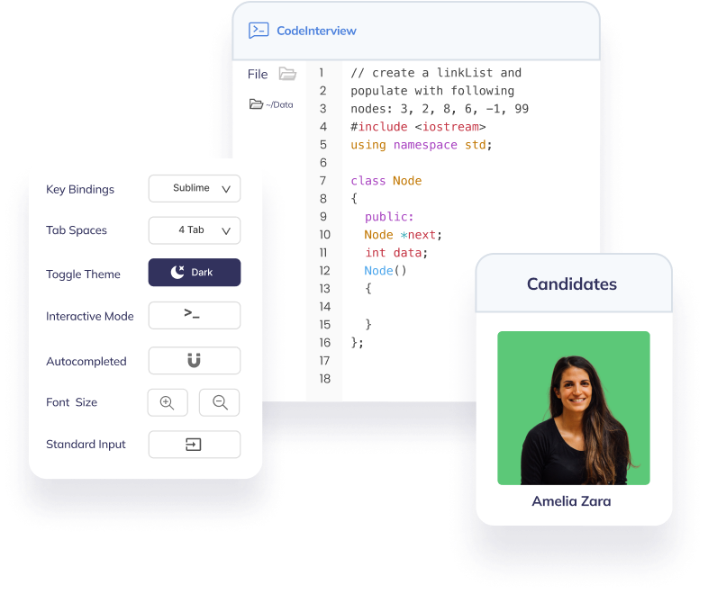

Intuitive interface
Compile and run code in a familiar interface so candidates can showcase their best skills. Customize key bindings, tab spaces and switch between dark/light mode with a single click.

Use the online collaborative IDE to evaluate candidate solutions.
Compile and run code in a familiar interface so candidates can showcase their best skills. Customize key bindings, tab spaces and switch between dark/light mode with a single click.
CodeInterview supports all popular programming languages so you can hire for a range of engineering roles. Switch between languages mid-interview and test candidates across multiple languages and frameworks.

Save and load questions templates to make interviewing easier while giving all candidates a level playing field. Add private solutions and scorecards to evaluate candidates as they solve a problem.
Go back in time and instantly replay any past interview. CodeInterview records every keystroke including code output.
Brief candidates, talk about their solutions and explain concepts as you would in a Zoom call.
Use a virtual whiteboard to illustrate problems and solutions when briefing candidates and reviewing their work.
After the interview is over, it gets locked for the candidate so only you and your team can access the notes and Code Playback.
Copy and share the interview URL in advance or invite candidates via email once you start.

Take notes as you interview the candidate so you can review and compare later. These are only available to you and your team.
“We use CodeInterview to get a sense of how people could fit within our team. Seeing how long a candidate takes and their decisions when solving a problem makes it easier to choose the right person.”
 Faisal Nasim,
Engineering Manager at Facebook
Faisal Nasim,
Engineering Manager at Facebook
No credit card required, get started with a free trial or choose one of our premium plans for hiring at scale.